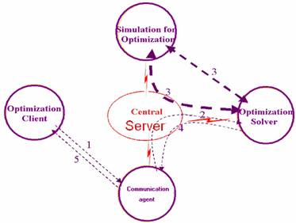
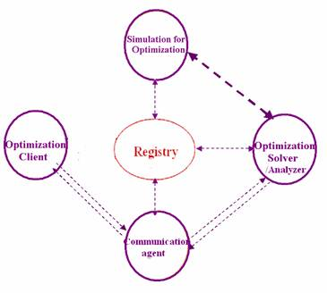

|
Optimization Services (OS)
Optimization Services is a unified framework for the new generation distributed optimization systems, mainly optimization over the Internet. The corresponding Optimization Services Protocol is being promoted as a set of industrial standards. The phrase “new generation” emphasizes the fact that Optimization Services is a state-of-the-art design and is not adapted from any existing system.
<= On the left panel, we take various approaches to explain what Optimization Services is -- as a framework, as a computational infrastructure, as a next generation NEOS, or as an OR Internet. Click through the links on the left to see more explanations on OS. In short you can consider Optimization Services as:
- An Optimization Internet, with solvers being web pages, registries being search engines, modeling language environment being browsers, etc.
- An open source computation infrastructure for OR with which researchers and practitioners can put up their own algorithmic codes.
- The next-generation NEOS (Network Enabled Optimization System), only that there is no longer a central server but a registry.
- A standard computational utility service, with which modelers write the models and get the results without knowing anything about how and where they are solved.
For more information, see:
Implementations of Optimization Services Systems.
There are two ways to implement an Optimization Services System: centralized system and decentralized system.
Centralized OS System
Most of the current Optimization Systems are centralized systems. The Optimization Services simplified view of any centralized optimization system is shown in the following figure.

The optimization client is often a modeling language environment (MLE) or some customized graphical user interface (GUI) with prewritten optimization models behind it. Dotted arrows indicate data flow and corresponding numbers show a typical flow sequence. The data are usually some instance representations. Arrows that do not go through the central server mean a direct local invocation, so a communication agent is usually bundled together with the optimization client. The communication agent can actually be bundled with any component that needs to make a remote connection. The simulation can be called by the optimization solver either remotely or locally. If locally, the simulation is usually a simple function or expression tree. The arrows (3) between solver and simulation are in bold because the data flow between the two can be highly iterative. The model component is not part of the Optimization Services framework. It belongs to the user end and is isolated from the software system by the optimization client. The analyzer component is usually not separated out in a centralized optimization system.
Decentralized OS System
Optimization Services’ new approach to the next generation architecture design is an approach of decentralization shown in the following figure.

The optimization client in the above figure still invokes the communication agent, but the agent no longer connects to the optimization solver through a server. The registry replaces the server in a centralized scheme. All the components in the distributed system talk in a peer to peer mode. After the communication agent discovers a solver from the registry, it contacts the solver directly. In a decentralized system, the analyzer plays an important role. But from the architecture view, the optimization solver and analyzer are of no difference as they are both services provided over the distributed system and both can be discovered in the registry. As in the centralized scheme, the simulation service is usually iteratively invoked by a solver either locally or remotely, except that the invocation is no longer routed through the server. Also notice that there is a link between the registry and all the services as the registry can periodically check these services to get their latest process information. Dotted arrows that indicate data flow no longer have corresponding numbers showing a typical flow sequence. There can be many process flows as explained in the next section. From the Optimization Services standardization perspective, the most important parts of the system components are instances (data flow on the dashed arrows)and communication agents.
|

{kind=link}
{kind=link}